响应combined_depth_ir_darkline
当前主链[9, 8] / 72 点
频相网格[17, 16] / 272 点
梁筋过滤后170 点
beam mask 像素43036
总耗时16685.3 ms
实验结论
这份报告不是只画流程，而是对当前画面逐步跑出中间结果。重点看第 4/5 步的 FFT 周期驼峰、第 6 步的完整频相网格，以及第 8/9 步过滤前后的原图点位。
关键数值
| 项目 | 结果 |
|---|---|
| 当前 peak-supported 线族 | [9, 8] |
| 恢复频相网格线族 | [17, 16] |
| 纵向 FFT estimate | {'period': 21, 'phase': 11, 'score': 0.3792588940536422, 'fft_score': 0.5579007900809173, 'correlation_score': -0.01008162833750248, 'phase_score': 0.4367424249649048, 'frequency_bin': 16, 'method': 'fft'} |
| 横向 FFT estimate | {'period': 22, 'phase': 16, 'score': 0.6440492428958197, 'fft_score': 1.0, 'correlation_score': -0.09697944670915604, 'phase_score': 0.4521884620189667, 'frequency_bin': 17, 'method': 'fft'} |
| beam_candidate bands | [{'axis': 'x', 'start': 46, 'end': 57, 'width': 12, 'peak': 1.8298779726028442, 'coverage': 0.497529200359389, 'type': 'beam_candidate'}, {'axis': 'x', 'start': 303, 'end': 313, 'width': 11, 'peak': 1.8416237831115723, 'coverage': 0.5363881401617251, 'type': 'beam_candidate'}] |
3/4/5/6：以频相主线为基底
| 算法 | 过滤后点数 | 均值响应 | 是否兜底直线交点 |
|---|---|---|---|
03_recovered_greedy_curve |
170 | 0.785 | 否 |
04_recovered_dp_curve |
170 | 0.803 | 否 |
05_recovered_ridge_curve |
170 | 0.736 | 否 |
06_recovered_ir_assisted_curve |
170 | 0.761 | 否 |
每一步效果图
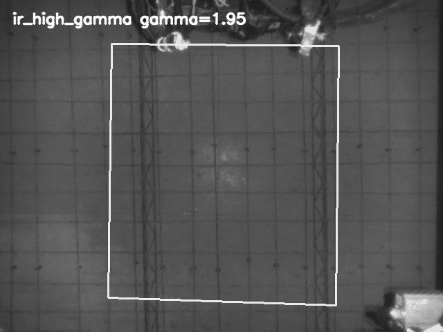
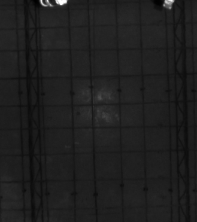
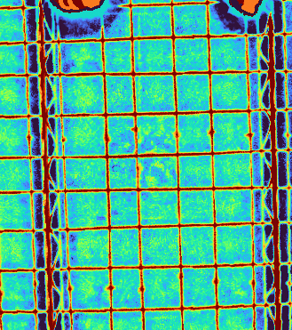
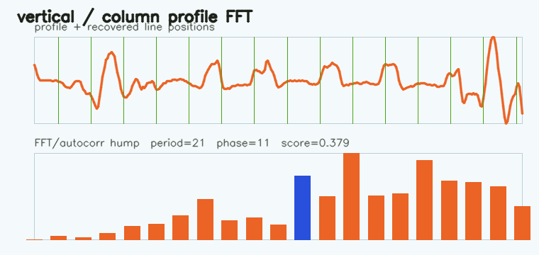
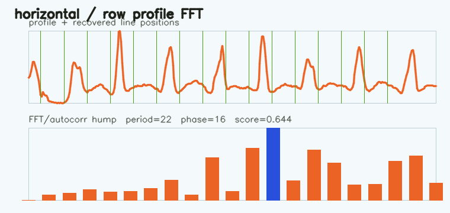
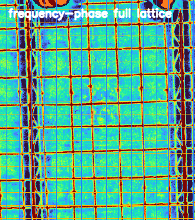
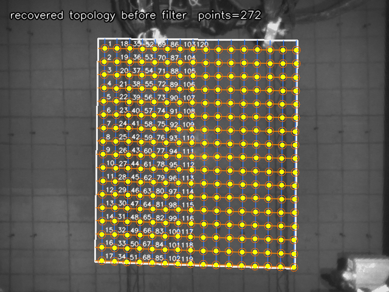
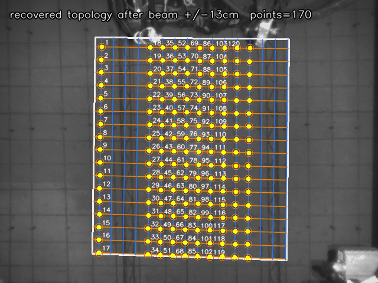
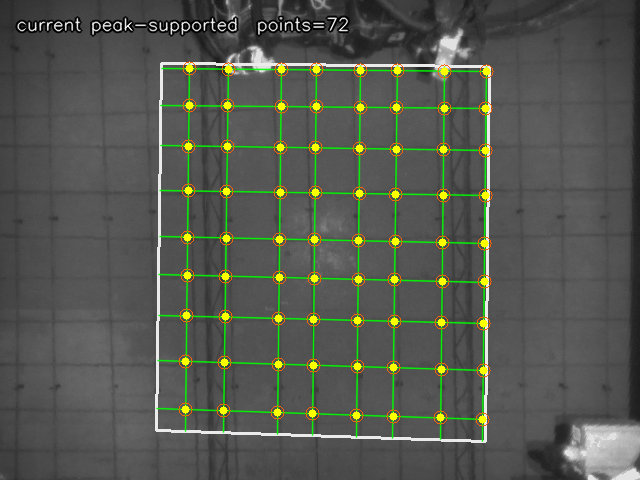
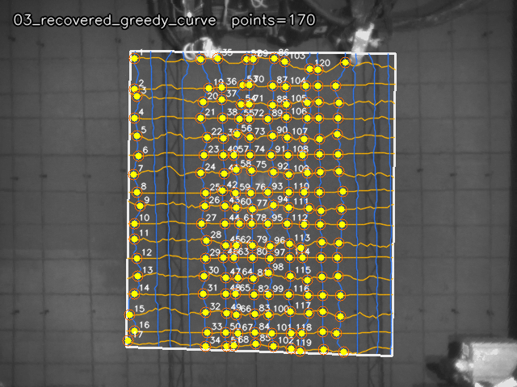
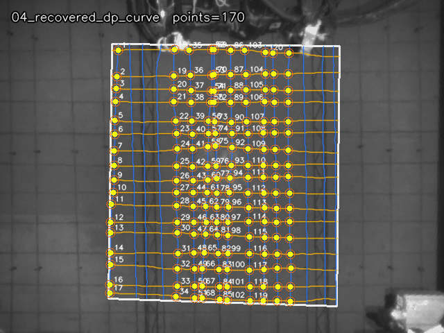
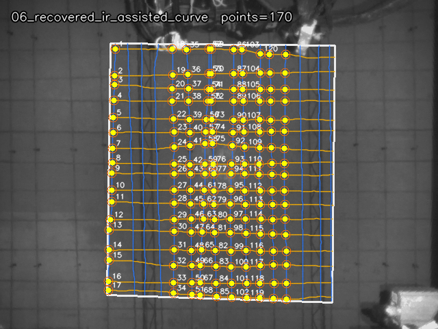